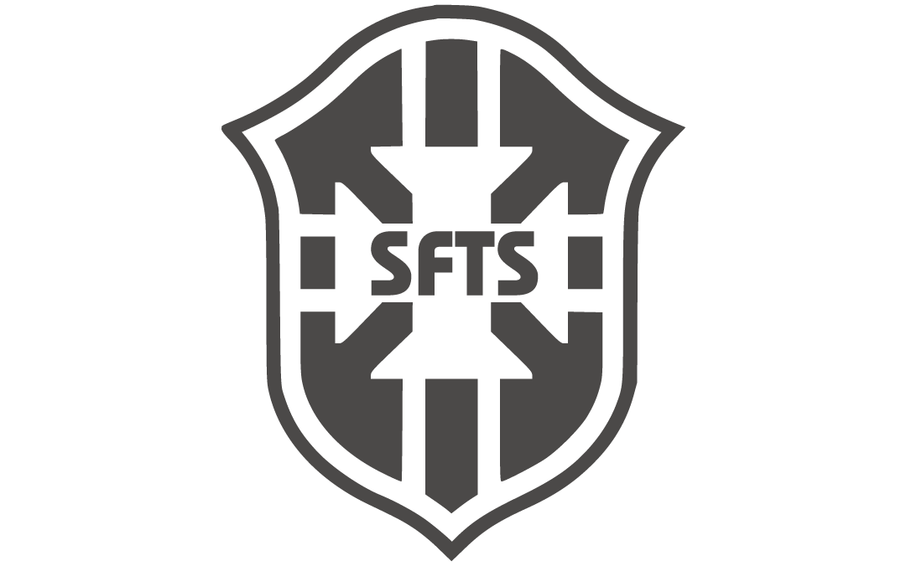
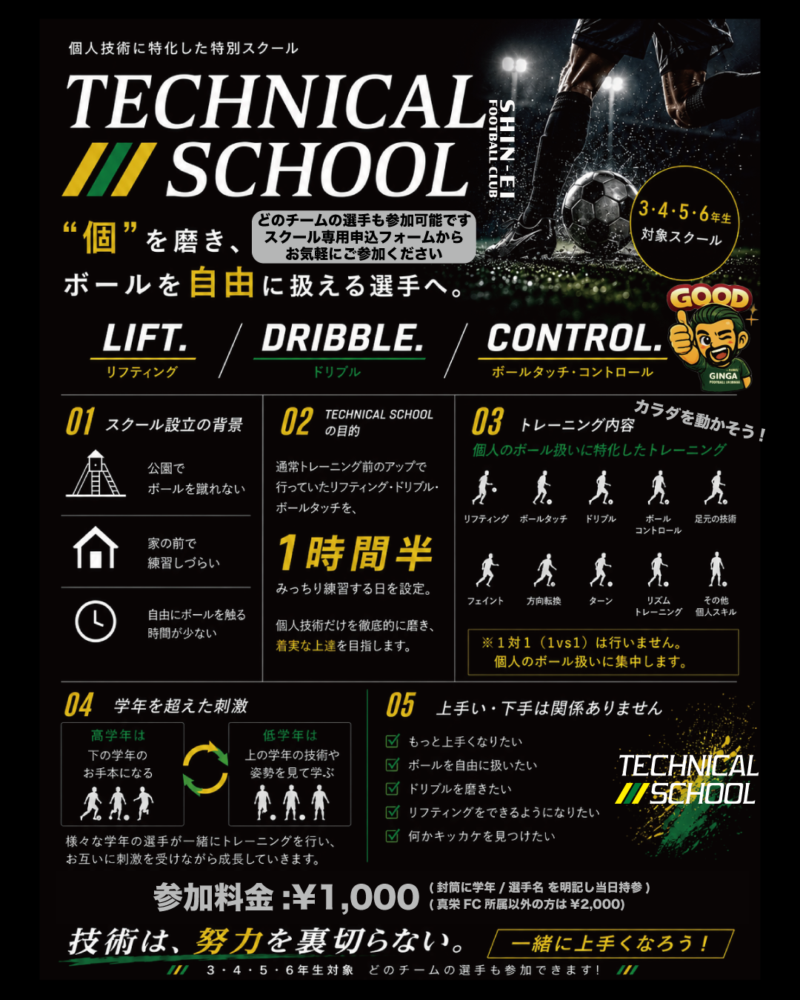

リフティング
ボール感覚、身体の軸、集中力を育てる基礎。できる回数よりも、扱い方の質を上げます。

SHIN-EI U-12 Technical SchoolThree core skills
ボールを止める、運ぶ、触り続ける。プレーの選択肢を増やすために、 テクニカルスクールではこの3つを軸に反復します。
ボール感覚、身体の軸、集中力を育てる基礎。できる回数よりも、扱い方の質を上げます。
足元から離れすぎない運び方、方向転換、リズム変化を反復して身につけます。
次のプレーへつながる置き所を磨き、ボールを自由に扱える状態を目指します。
The hidden problem
思いきり触る場所が少なく、反復の量をつくりにくい。
周囲を気にして、集中してボールを扱う時間が取りにくい。
通常練習だけでは、個人技術だけを磨く時間が足りない。
「練習したい」という気持ちがあっても、場所や時間の制限でボールに触れる量が足りない。 だからこそ、個人技術だけに集中できる時間をスクールとして用意します。
The promise
通常トレーニング前のアップで行っていたリフティング・ドリブル・ボールタッチを、 テクニカルスクールでは90分みっちり練習します。派手なメニューではなく、 ボールを自由に扱うための基礎を、徹底的に、着実に積み上げます。
90 minutes
通常練習のアップで短く行っていたメニューを、テクニカルスクールでは 目的別に分けて深く練習します。量をこなしながら、できた感覚を残す時間にします。
リフティングや細かなタッチで、足とボールの距離感を整えます。
ドリブル、方向転換、ターンを繰り返し、自由に扱う感覚を高めます。
フェイントやリズム変化を加え、試合で使える個人スキルへ近づけます。
Training menu
1対1ではなく、個人のボール扱いに集中します。 できた感覚を積み重ね、試合で自然に出せる技術へ変えていきます。
身体の軸、ボール感覚、集中力を高めます。
足元で自由に動かすための細かな感覚を磨きます。
運ぶ、かわす、止める動作を反復します。
ボールを置く位置と次の動作への準備を整えます。
方向転換やリズム変化を身につけます。
足元の技術を中心に、自分の武器を増やします。
Focus rule
このスクールで集中するのは、相手に勝つ前の「自分のボールを自由に扱う力」です。 まずは足元の技術、ボールタッチ、コントロールに徹底して向き合います。

Mixed grades
様々な学年の選手が一緒にトレーニングを行うことで、 技術だけでなく、取り組む姿勢にも刺激が生まれます。
For players
必要なのは、今より上手くなりたいという気持ちです。
Why open
清田区で育ってきたからこそ、この地域に根ざした指導をしたい。 そして、地元の子どもたちがもっとボールに触れられる環境をつくりたいと考えています。
真栄FCの選手だけでなく、様々な子にトレーニングの環境を用意してあげたい。 それが、テクニカルスクールを開く理由のひとつです。
昨今は公園でサッカーができなかったり、思いきりボールに触れる場所が少なかったりします。 だからこそ、多くの子にボールを触る機会を提供したいと考えています。
地元で育ってきたからこそ、チームに関係なく上手くなりたい子が集まれる場所をつくります。
多くの子がボールに触れることで、地域全体の技術レベルが上がることを目指します。
数年後、地域から良い選手が出れば、我々の指導方法や伝え方が良かったと確認できます。
How to join
真栄FC所属選手は申込不要です。所属外の選手は、参加用Googleフォームから お申し込みください。
事前申込は不要です。封筒に学年・選手名を明記し、参加料金を当日持参してください。
参加用Googleフォームから必要事項を入力してください。
Googleフォームへ小学3・4・5・6年生対象。どのチームの選手も参加できます。
Entry
真栄FC所属選手は申込不要です。封筒に学年・選手名を明記し、 参加料金を当日持参してください。
Start now
3・4・5・6年生対象。どのチームの選手も参加できます。